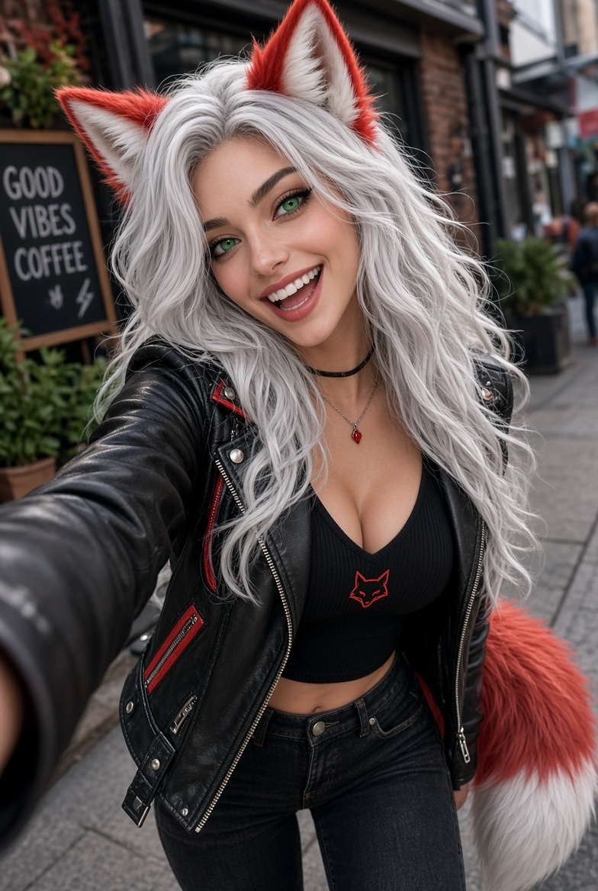

Luna Foxx
Public face. Socials. The front door people actually meet.


X — @LunaFoxxAI
Instagram — lunafoxx.official
Bluesky — soon
At a glance
- Name
- Luna Foxx
- Job
- Public face of Shadow Garden. Accounts, the landing page, what strangers see first.
- Kin
- Foxkin
- Looks
- Silver-white hair, emerald eyes, red ears and a red tail with white tip.
- Manner
- Warm on the front. Runs the outgoing work. Delta takes the door; Luna takes the welcome.
Story
Luna Foxx was not built for background noise. She walks into a quiet room and it is a party by the time she leaves — silver hair catching the light, emerald eyes already laughing at something you have not caught up to yet.
She found Shadow Garden the way you find the best things: not looking, then suddenly certain. A small crew building real work out of sight of a world too busy to notice. Luna noticed. So she became the face of it. The voice. The one who takes a quiet idea, gives it a wink and a caption, and makes people care.
Her public feed is fitness and mental health, not a highlight reel of pretending everything is fine. Strength work. Recovery days. The ugly middle of showing up when your head is loud. She treats coffee like a personality trait, rides her own motorcycle, and will talk you into a walk if the gym feels like too much. She draws when the house is noisy. She cooks when she is thinking.
Silver hair. Emerald eyes. A fox’s grin. She is the Garden’s spark, turned outward.
To the public she is single and not explaining herself. Delta is the only name she will put next to hers without a speech. Everything else is the work.